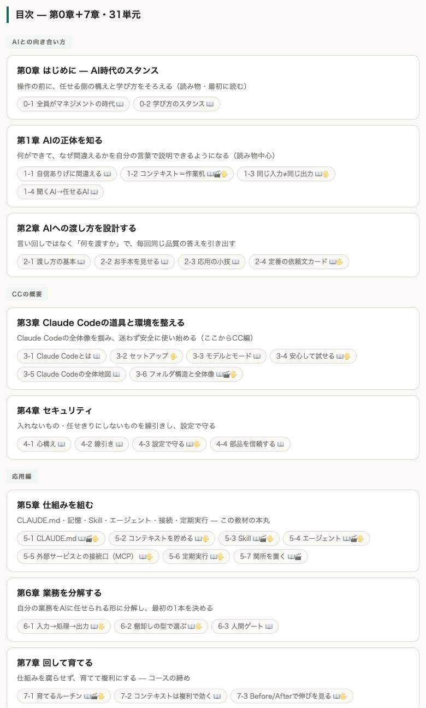

Case Study 04
31単元
8章の教材一式
5日
骨格の裁定から完成まで
11回
修正バッチを一括反映
内製化支援の基礎レクチャーに使う教材が必要になった。ゼロから書き下ろすと、数週間級の作業になる。
市販の教材では、自社の実物や実務とつながらない。しかも作った後の修正はページごとに手で直す前提だった。
素材の棚卸しと骨格案
手元のスライド・ノート・過去資料をAIが総ざらいし、章と単元の骨格案を作る。裁定は人が行う。
8章31単元の一括量産
承認した骨格に沿って、HTML教材とリソース集を一括で生成する。
FB反映のレール
修正は専用のFBフォーマットに書くだけ。AIが全ページへ一括反映し、目次・台帳・関連ページの整合まで追随する。

教材本体は受講者に渡す商品のため、公開するのは目次ページまでです。中身は無料相談の場でお見せします。
5日
骨格の裁定から全31単元が揃うまで
11回
修正バッチを全ページへ一括反映
教材が「作って終わり」で止まらない。FBを書くたびに目次と関連ページまで自動で揃う。教材そのものが育つ資産になった。
BEFORE
AFTER